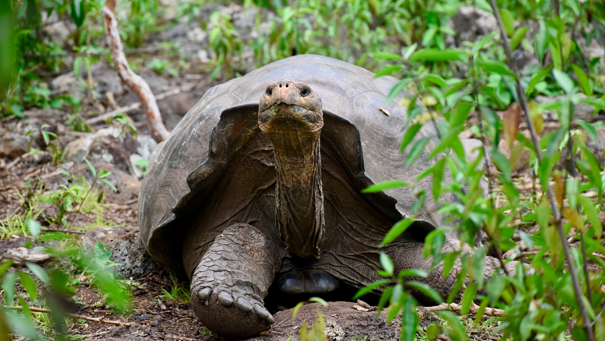
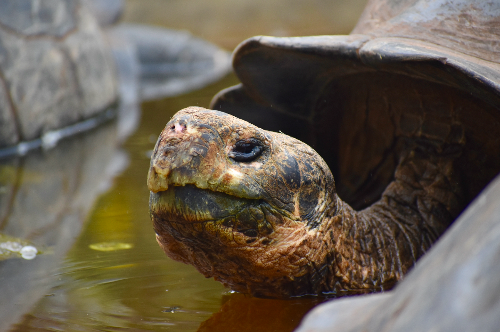

Galapagos Giant Tortoises

Charles Darwin Research Center, Santa Cruz
The Charles Darwin Research Center is the biggest and most easily accessible tortoise breeding center on the island. They even have Lonesome George’s body preserved by taxidermy on site. Here you can see the differences between the tortoises of different islands, and you will get to see them at all different sizes and ages. This center is the most elaborate and educational with the most signs and habitats. Although any breeding center will suffice for seeing the giant tortoises, this one is definitely the most comprehensive and informational.
To get here, you can follow directions easily on Google Maps. It is about a 10 minute walk from the center of town and is open until sunset. The exhibits are marked and relatively easy to find.

El Chato, Santa Cruz ($25)
El Chato is a plot of land with lava tunnels and wild giant tortoises. It is a $10 taxi drive each way, and a $5 entrance fee. Giant tortoises wander around freely in the highlands of Santa Cruz, and frequently visit the watering hole at El Chato. This is a great experience for viewing tortoises outside of a breeding center. The lava tunnels are also fun to walk through, as they are naturally occuring and very pretty. There is also a restaurant on site where you can get lunch.
Tortoise Breeding Center, Isabela
The Isabela Island breeding center is the second most accessible breeding center in the Islands (the easiest breeding center to get to is in Santa Cruz). Entrance to the breeding center is free, you just need to take a short walk there, or you can take a $2 taxi. As part of the walk there, you can follow the scenic boardwalk path known as Posa Salinas. To get there, you can use google maps and type in “Centro de Crianza Tortugas Gigantes” and it will show you how to walk there. On your way, you will pass the marked trail for Posa Salinas and you can choose to take the path instead of walking in the street. While at the breeding center, you will see a variety of sizes of tortoises in large pens. You will be able to read information about the turtles and see how old some of them are. Fun fact: the age of the largest tortoises are largely unknown because they are older than the center itself!
Galapaguera Giant Tortoise Breeding Site, San Cristobal ($40)
Galapaguera is the giant tortoise breeding site on San Cristóbal Island. The entrance is free, but you will have to pay for a taxi to get there, which costs $20 each way. If you are traveling with others, you can split this cost, making it more affordable.
At the breeding site, you can walk along a path where you can spot a variety of mature giant tortoises in their “natural” habitat. These tortoises are allowed to walk around a relatively large enclosed area, but they are still monitored and under the care of the breeding center. There is also an area specifically for breeding where you can see juvenile giant tortoises at different ages.
Note: You will need to tell your taxi driver when you want to be picked up, because there is no service and the drive is a pretty solid distance from town (about 30 minutes). This excursion is great when coupled with a trip to Puerto Chino, which is a beautiful white sand beach only about a quarter mile away from the breeding center. It is a steep downhill walk from Galapaguera to Puerto Chino, which is completely fine to do by foot, but if you are lucky a taxi driver passing by will offer you a lift for free since it is very close.